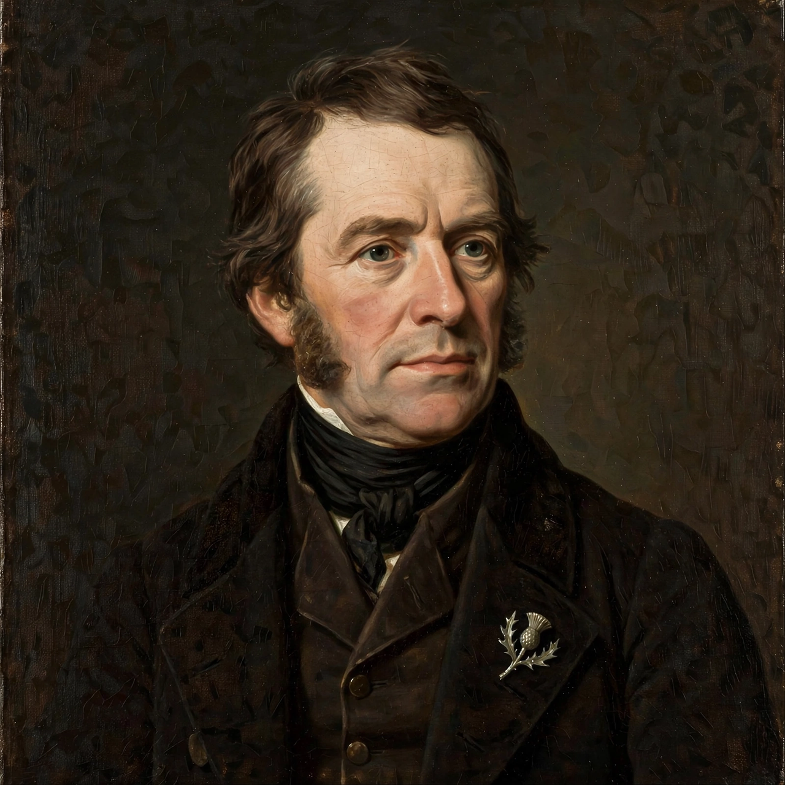

| John Rennie | |
|---|---|
 | |
| Born | 7 June 1761, Phantassie, East Lothian, Scotland |
| Died | 4 October 1821 (aged 60), London, England |
| Occupation | Civil engineer |
| Known for | Canals, aqueducts, docks, bridges |
| Children | John Rennie the Younger; George Rennie |
John Rennie (7 June 1761 – 4 October 1821) was a Scottish civil engineer who designed many bridges, canals and docks. Born at Phantassie, near East Linton, he was the youngest son of a farmer and showed an early aptitude for mechanics, working with the millwright Andrew Meikle, inventor of the threshing machine, before studying at the University of Edinburgh.
Rennie moved to London in 1784 to work for Boulton and Watt, designing machinery for steam engines, including the Albion Mills in Southwark. He established his own engineering practice and became one of the leading civil engineers of the canal age. His canal works include the Kennet and Avon Canal, the Rochdale Canal, the Lancaster Canal and the Crinan Canal.
His aqueducts, such as the Lune Aqueduct and the Dundas Aqueduct, are celebrated for their elegance. He engineered harbour and dock works at Hull, Liverpool, Greenock and London (the London Docks and the East and West India Docks), and designed the breakwater at Plymouth. In London he designed Waterloo Bridge (opened 1817) and began the new London Bridge, completed after his death by his son John Rennie the Younger. The Bell Rock Lighthouse was built to his design by Robert Stevenson.
Rennie died in 1821 and was buried in St Paul's Cathedral. His sons George and John continued the family engineering practice. He was a fellow of the Royal Society and is regarded, with contemporaries such as Thomas Telford, as one of the founders of the civil engineering profession in Britain.